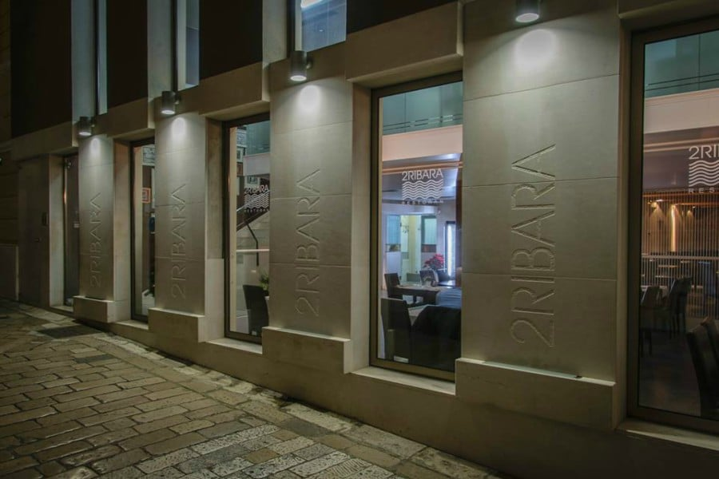
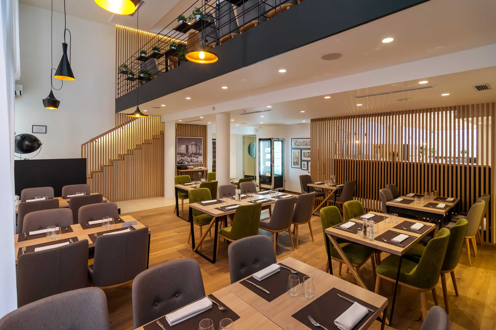
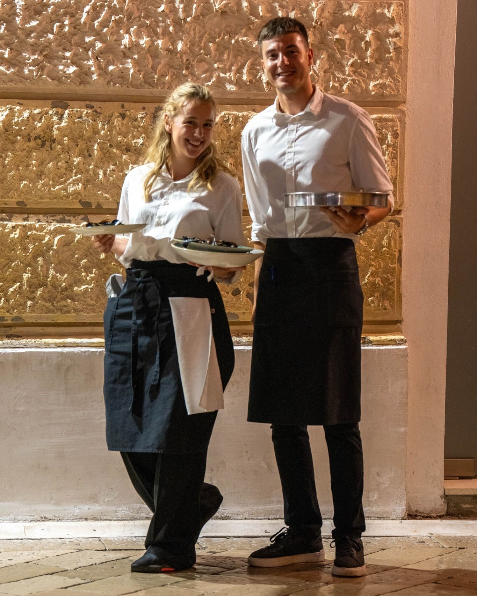
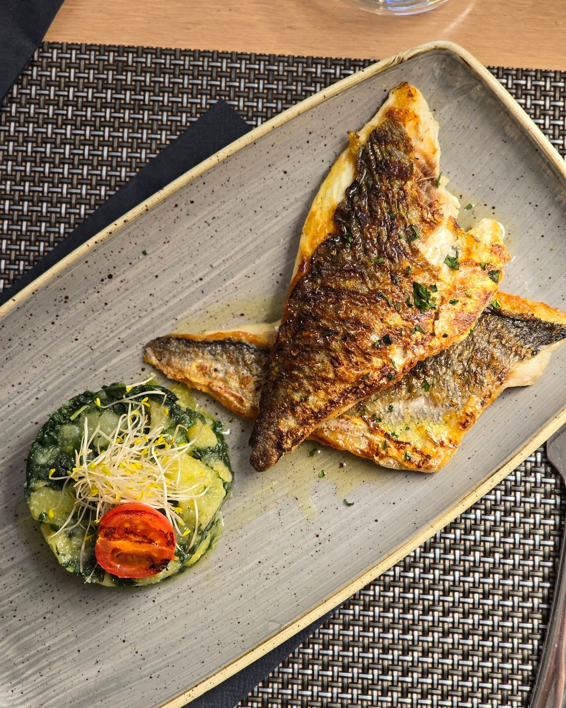
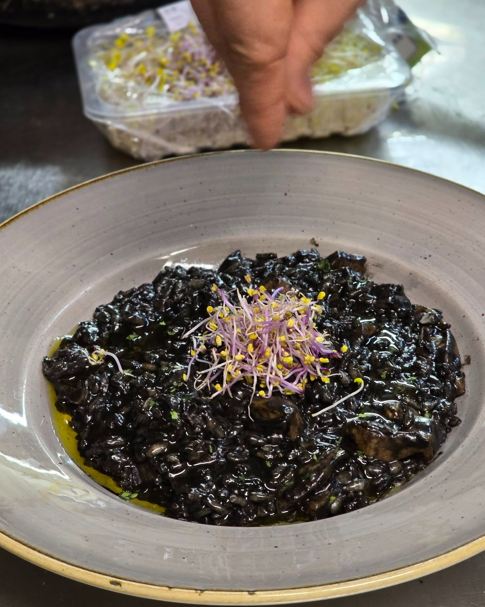
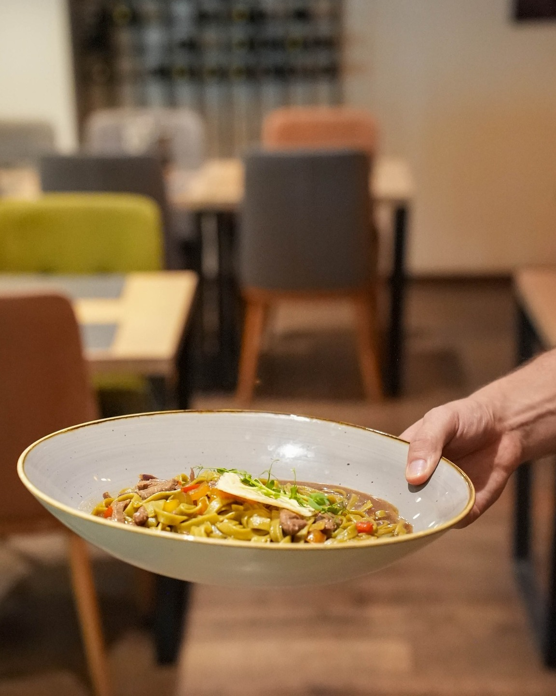
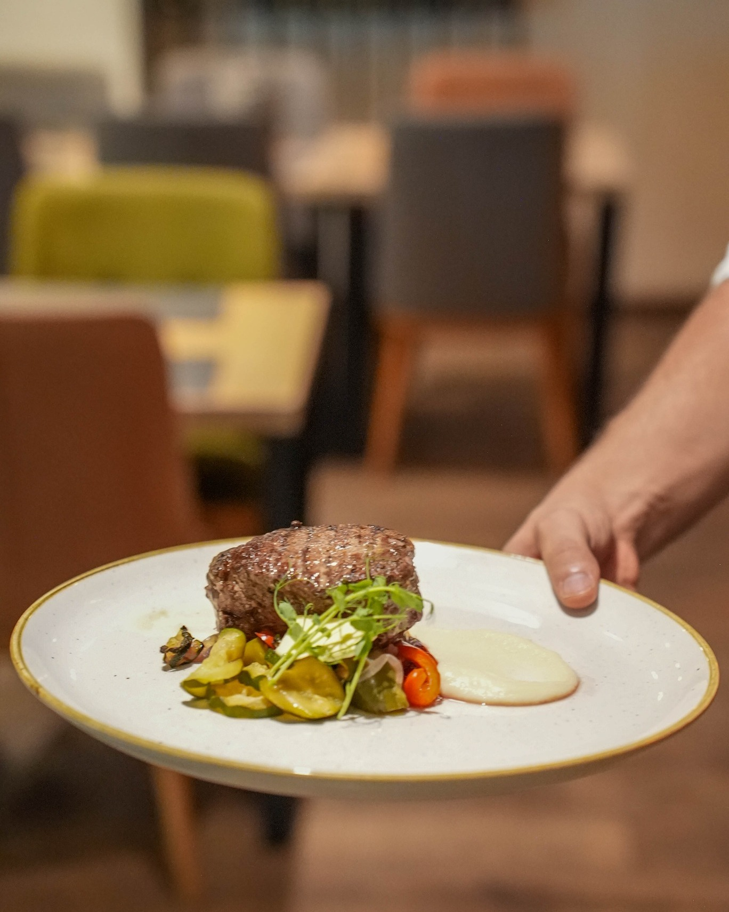

2 RIBARA
Autentična dalmatinska kulinarska iskustva uz more
Svježina Mora
Svakodnevno nabavljamo najsvježije morske plodove direktno s lokalnih tržišta Zadar.
Obiteljska Tradicija
Recepti prenešeni kroz tri generacije, od osnivača restorana do danas.
Gostoprimstvo
Svaki gost je dio naše obitelji. Topla atmosfera i nesebično gostoprimstvo.
Kako nas pronaći

Smješteni na Ul. Blaža Jurjeva 1 u srcu Zadar, 2 Ribara je savršeno pozicioniran za sve koji traže autentičnu dalmatinsku kuhinju. Lako nas pronađite uz naš prepoznatljiv izgled i tradiciju od 50 godina.
Ambijent i Ugoda

Naš interijer kombinira modernu eleganciju s toplinskom atmosferom dalmatinskog gostoprimstva. Svaki detalj je osmišljen kako bi vam pružio nezaboravan doživljaj tijekom večere.
Naš tim - gostoprimstvo konobara

Naši iskusni konobari i zaposleni su posvećeni pružanju izuzetnog gostoprimstva. S ljubavlju pripremljene preporuke, topao stav i profesionalna usluga čine svaki posjet nezaboravnim. Vaše zadovoljstvo je naša prioriteta.
Iskusite Dalmatinsku Kuhinju
2 Ribara je jedan od najstarijih restorana u Zadru, s 50 godina kontinuiranog rada i tradicije. Smješteni na Ul. Blaža Jurjeva 1, pružamo autentičnu dalmatinsku kuhinju s fokusom na morske specijalitete.
Naša kuhinja je poznata po korištenju samo najsvježijih namirnica i tradicionalnih receptata koji su se prenosili kroz generacije. Svako jelo je pripravljeno s ljubavlju i posvećenošću.
Naša Jela




Informacije o Restoranu
Lokacija
Ul. Blaža Jurjeva 1
23000 Zadar
Hrvatska
Kontakt
Telefon: +385 23 123 456
Email: info@2ribara.hr
Radno Vrijeme
Pon-Pet: 12:00 - 23:00
Sub: 13:00 - 24:00
Ned: 13:00 - 23:00
Zakaži stol
Ako želite rezervaciju za specijalne trenutke, molimo vas da nas kontaktirate telefonom ili emailom.